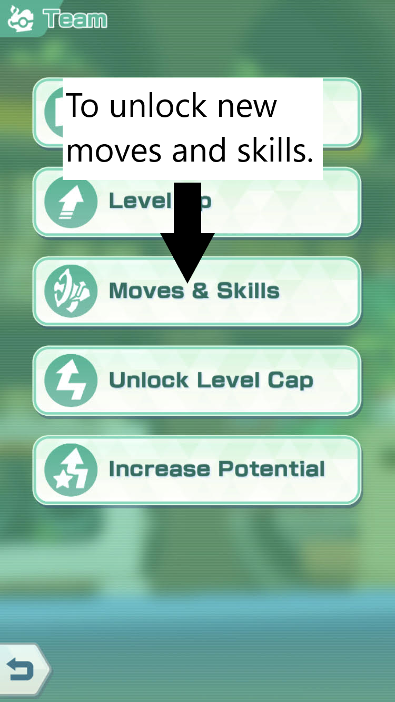
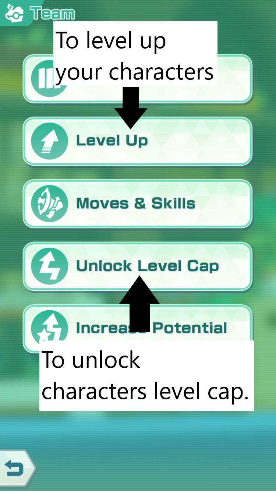
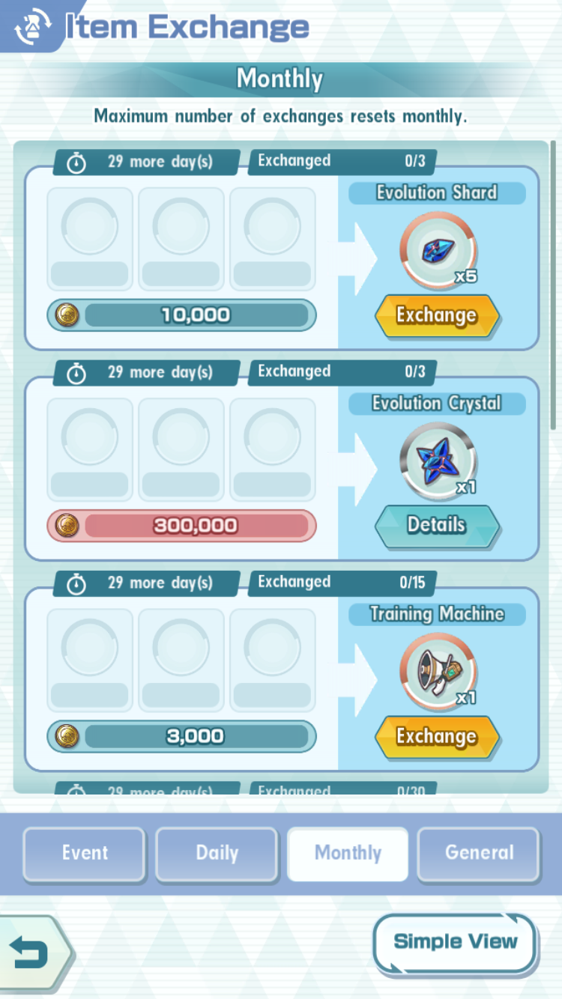

You start off with pikachu as your pokemon then when you move forward, you will collect characters instead of pokemon to fight with you (You can only use 3 characters in battle). There are 3 different types of characters/roles: The first one is strike, it does most of the damage in game. The second one is Support, it has a good amount of health and it helps support the strike by providing more power in the strike's damage and other stats such as defense, speed, accuracy, etc. The last one is Tech, it does long, lasting damage to your enemies and can debuff your enemies to make them weaker.
To obtain characters, you can go to shop, then you select Sync Pair Scout. These will cost you some gems to obtain them, although it's about luck whether you get a good one or not. Another way you can obtain characters is by playing on single-player main story mode, but it may take a while the further you go in the story.
To learn a new move, you can go to "team", then you click on "Moves & Skills" and thats where you can unlock new moves and skills. All of them require materials such as: Training machine, Super Trainging machine, etc to unlock new moves and skills.
To level up your characters, you can: Go to the training area to get xp, but the best training area to level up is the "Level-Up Course". Each time you complete a "Level-Up Course", you get something called a Level-Up Manual which is used to level up your character. There are different rarities of Level-Up Manuals, the 1-star one will give you 100 xp, the 2-star one will give you 1500 xp and the 3-star one will give you 5000 xp. You then click a button that says "team", then you select the button "Unlock level cap" then you will see what items you will need to unlock their level caps. For evolving your pokemon, only some characters have that option like Rosa, Pryce, Kris, etc. To evolve something, you will need to reach a certain level, then it will say something on your screen that says something about evolving, then you click the "Explore" button and then you click "Sync Pair Stories" then you find the character that said they can evolve. To evolve, you need some Evolution Materials. So then you click "shop", then you click "Exchange Items" and then you click "General" on the bottom right of your screen, then you will see the evolution materials.
You can use your gold to buy stuff in the shop like Evolution materials, training machines, Level-Up manuals, etc. I prefer to save your gold to buy evolution materials because later on in game, the other stuff like training machines, level-up manuals, etc are easy to get.
You probably have characters that are not strong against the ememy, your enemy's resistance is your character like if your enemy was a water type and you use a fire type, it won't be as effective. Ways to have a higher possibility to win is: Use characters that are strong against the character, have good strength like reach at least the recommended level and have high character levels. You should also have at least 1 support to help your team and at least 1 strike for offense.
One way you can get gems is by buying gems from the shop. Another way you can get gems is by logging on daily (sometimes you get gems). You can also complete Sync Pair stories to get some gems or from missions. Winning a match in a new area and difficulty (no difficulty in single player story) also gives you gems.
Return to the top of the page.